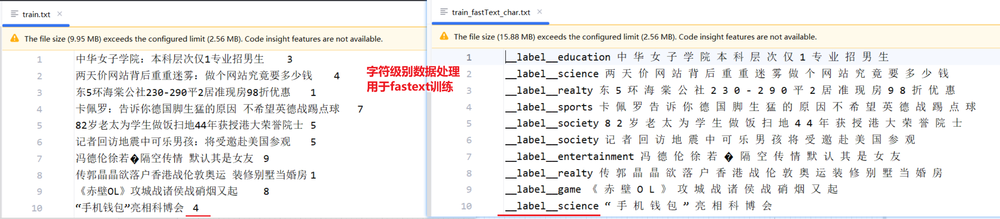
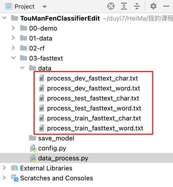

3.2 Fastext 模型¶
学习目标
-
利用Fastext模型实现投满分项目的模型构建.
-
对Fastext模型进行评估、优化
-
对Fastext进行模型部署与上线测试
1. 代码结构图¶
代码位置：
基于fastText分类建模思路：
①对数据train.txt等相关文件的文本列进行 分词处理，两种处理思路字符级别以及词级别。

②利用fastext库进行建模、评估与保存。
02-fasttext_char_1_default.py
02-fasttext_char_2_auto.py
02-fasttext_word_1_default.py
02-fasttext_word_2_auto.py
③模型预测
④模型部署，提供api接口
⑤前端预测实现
2. 代码实现¶
2.1 config配置文件¶
代码位置：TMFCode\02-rf\config.py
class Config:
def __init__(self):
self.root_path = '/Users/duyi/duyi7/HeiMa/我的课程/投满分项目/投满分项目-我的备课/03-code/TouManFenClassifier/'
# 原始数据路径
self.train_datapath = self.root_path + '01-data/train.txt'
self.test_datapath = self.root_path + '01-data/test.txt'
self.dev_datapath = self.root_path + '01-data/dev.txt'
# 类别文档
self.class_doc_path = self.root_path + "01-data/class.txt"
# 数据处理保存路径
# 字符级别fasttext
self.process_train_datapath_char = self.root_path + "03-fasttext/final_data/train_process_char.txt"
self.process_test_datapath_char = self.root_path + "03-fasttext/final_data/test_process_char.txt"
self.process_dev_datapath_char = self.root_path + "03-fasttext/final_data/dev_process_char.txt"
# 词级别fasttext
self.process_train_datapath_word = self.root_path + "03-fasttext/final_data/train_process_word.txt"
self.process_test_datapath_word = self.root_path + "03-fasttext/final_data/test_process_word.txt"
self.process_dev_datapath_word = self.root_path + "03-fasttext/final_data/dev_process_word.txt"
# 模型路径
self.ft_model_save_path = self.root_path + '03-fasttext/save_models'
# 处理完的数据（用于训练）
self.final_data = self.root_path + '03-fasttext/final_data'
# 类别字典
self.id2class_dict = {i:line.strip() for i, line in enumerate(open(self.class_doc_path))}
if __name__ == '__main__':
config = Config()
print(config.train_datapath)
print(config.id2class_dict)
2.2data_preprocess数据处理¶
代码位置：
03-fasttext\01-data_preprocess.py
fastText数据处理背景：
FastText 是一个开源、免费、轻量级的库，允许用户学习文本表示和文本分类器。它适用于标准的通用硬件。模型稍后可以缩小，甚至适合移动设备。
FastText最初训练语料是英文，英文天然支持每个单词之间是有空格的，所以中文相较英文语料的文本分类任务或者词嵌入都会多一步分词。最终的训练数据需要构建成如下格式，构建思路来自官方的数据样例（https://dl.fbaipublicfiles.com/fasttext/data/cooking.stackexchange.tar.gz）：
单字符级别分字处理
原始样本：三羊资产清盘事起ITAT 0 处理后样本：
__label__finance 三 羊 资 产 清 盘 事 起 I T A T词级别分词处理
原始样本：三羊资产清盘事起ITAT 0 处理后样本：
__label__finance 三羊 资产 清盘 事起 ITAT
导入工具包及初始化配置：
import jieba
from config import *
conf=Config()
step1：加载类别映射数据¶
在实际构建训练数据，可以看到我们的label需要将类别数字映射为分类类别，所以需要加载文件路径：
- train.txt | test.txt |dev.txt | class.txt
# 读取类别数据，生成id2class
id2class = {i: item.strip() for i, item in enumerate(open(conf.class_path, 'r', encoding='utf-8').readlines())}
print(id2class)
step2：编写处理函数¶
def process_fasttext(input_path, output_path, is_char_or_word=True):
# 读取文本数据
with open(input_path, 'r', encoding='utf-8') as f:
with open(output_path, 'w', encoding='utf-8') as f_w:
for line in f.readlines():
if line.strip() == '':
continue
text, label_str = line.strip().split('\t')
label = id2class.get(int(label_str), "society")
write_line = "__label__" + label + " "
if is_char_or_word:
write_line += " ".join(text)
else:
write_line += " ".join(jieba.lcut(text))
write_line += "\n"
print(write_line)
f_w.write(write_line)
step3：调用处理函数¶
process_fasttext(conf.train_data_path, conf.train_process_data_path_char, is_char_or_word=True)
process_fasttext(conf.train_data_path, conf.train_process_data_path_word, is_char_or_word=False)
process_fasttext(conf.dev_data_path, conf.dev_process_data_path_char, is_char_or_word=True)
process_fasttext(conf.dev_data_path, conf.dev_process_data_path_word, is_char_or_word=False)
process_fasttext(conf.test_data_path, conf.test_process_data_path_char, is_char_or_word=True)
process_fasttext(conf.test_data_path, conf.test_process_data_path_word, is_char_or_word=False)
运行结果：

2.3fasttext_char_1_default字符级别建模¶
代码位置：
TMFCode\03-fasttext\02-fasttext_char_1_default.py
字符级别建模（默认参数进行训练）
fastText模型构建之后，选择的配置参数非常多，当前的fasttext_char_1_default.py我们只设置训练数据路径，所有的其他参数的值都采用默认。
# 导入工具包
import fasttext
from config import Config
import datetime
#获取时间
current_time=datetime.datetime.now().date().today().strftime("%Y%m%d")
conf=Config()
# 1、模型训练
model = fasttext.train_supervised(
input = r'C:\Lucky_dt\2_bj\TMFCode\03-fasttext\final_data\train_fastText_char.txt',
)
#2、模型保存
path=conf.ft_model_save_path
model.save_model(path+f"\\fastText_char_default_{str(current_time)}.bin")
#3、模型预测
print(model.predict("《 赤 壁 O L 》 攻 城 战 诸 侯 战 硝 烟 又 起"))
# 4、模型词表查看
print("查看模型词表[:10]：")
print(model.words[:10])
# 5、查看模型子词，上述训练未开启子词，所以这里查到还是词本身
print(model.get_subwords('你好'))
# 6、模型测试
res =model.test(r'C:\Lucky_dt\2_bj\TMFCode\03-fasttext\final_data\test_fastText_char.txt')
print(res)
输出日志：
C:\Lucky_dt\1_sw\10_anaconda\install\envs\TMF\python.exe C:\Lucky_dt\2_bj\TMFCode\03-fasttext\02-fasttext_char_1_default.py
Read 3M words
Number of words: 4758
Number of labels: 10
Progress: 100.0% words/sec/thread: 1091510 lr: 0.000000 avg.loss: 0.488831 ETA: 0h 0m 0s
(('__label__game',), array([0.99977368]))
查看模型词表[:10]：
['</s>', '0', '1', '2', '大', '国', '图', '(', ')', '3']
([], array([], dtype=float64))
(10000, 0.8767, 0.8767) #测试样本数 ，
Process finished with exit code 0
结论: 采用字为单位的模型效果精准率和召回率都达到了87.67%, 相比于前面的实验并随机森林提升了大概4个百分点。
2.4fasttext_char_2_auto字符级别建模¶
代码位置：
TMFCode\03-fasttext\02-fasttext_char_2_auto.py
字符级别建模（采用auto自动调参进行训练）
fastText模型构建之后，选择的配置参数非常多，当前的fasttext_char_1_auto.py我们设置训练数据路径，并启用auto方式进行自动调参，注意自动调参需要增加验证集的设置。
以下是相关参数说明：
开启auto模式的模型训练： # autotuneValidationFile参数需要指定验证数据集所在的路径它将在验证集是使用随机搜索的方法寻找最优的超参数 # 使用autotuneDuration参数可以控制随机搜索的时间，单次搜索 默认是300，单位秒.根据不同的需求, 可以延长或者缩短时间. # 自动调节的超参数包含这些内容: lr 学习率 default 0.1 dim 词向量维度 default 100 ws 上下文窗口大小 default 5， cbow epoch epochs 数量 default 5 minCount 最低词频 default 5 wordNgrams n-gram设置 default 1 loss 损失函数 {hs,softmax} default softmax minn 最小字符长度 default 0 maxn 最大字符长度 default 0 dsub dsub ，全称为 "dimension subsampling"，用于控制输入向量的子采样率，以减少模 型的计算复杂度和内存占用。它通过降低词嵌入（输入向量）的维度来加速训练和压缩模型。 # 如何观察超参数调整过程，verbose: 该参数决定日志打印级别, 当设置为3, 可以将当前正在尝试的超参数打印出来。
# 导入工具包
import fasttext
from config import Config
import datetime
import random
import numpy as np
import os
# 获取当前日期
current_time = datetime.datetime.now().date().today().strftime("%Y%m%d")
# 1. 导入配置文件
conf = Config()
# 2. 模型训练
model = fasttext.train_supervised(
input=r'C:\Lucky_dt\2_bj\TMFCode\03-fasttext\final_data\train_fastText_char.txt',
autotuneValidationFile=r'C:\Lucky_dt\2_bj\TMFCode\03-fasttext\final_data\dev_fastText_char.txt',
thread=1, ## 单线程，确保可复现性
verbose=3 # 输出调参过程
)
# 3. 模型保存
path = conf.ft_model_save_path
model_save_path = path + f"\\fastText_char_auto_{str(current_time)}.bin"
# model.save_model(model_save_path)
# print(f"模型已保存至: {model_save_path}")
# 4. 模型预测
sentence = "俄 达吉斯坦 共和国 一名 区长 被 枪杀"
pred_label, pred_prob = model.predict(sentence)
print(f"预测结果: 标签={pred_label[0]}, 概率={pred_prob[0]:.4f}")
# 5. 查看模型子词
word = "你好"
subwords, subword_ids = model.get_subwords(word)
print(f"词 '{word}' 的子词: {subwords}")
print(f"子词 ID: {subword_ids}")
#获取词向量维度
print(model.get_dimension())
# 6. 模型测试
res = model.test(r'C:\Lucky_dt\2_bj\TMFCode\03-fasttext\final_data\dev_fastText_char.txt')
#参考官方说明：https://fasttext.cc/docs/en/supervised-tutorial.html
print(f"测试结果: 样本数={res[0]}, 精确率={res[1]:.4f}, 召回率={res[2]:.4f}")
输出日志：
日志中是score是值精确率。
C:\Lucky_dt\1_sw\10_anaconda\install\envs\TMF\python.exe C:\Lucky_dt\2_bj\TMFCode\03-fasttext\02-fasttext_char_2_auto.py
Trial = 1
epoch = 5
lr = 0.1
dim = 100
minCount = 1
wordNgrams = 1
minn = 0
maxn = 0
bucket = 0
dsub = 2
loss = softmax
...................
...................
Progress: 66.3% Trials: 11 Best score: 0.907700 ETA: 0h 1m41scurrentScore = 0.8816
train took = 25.5614
Trial = 12
epoch = 12
lr = 0.444924
dim = 187
minCount = 1
wordNgrams = 3
minn = 3
maxn = 6
bucket = 10000000
dsub = 4
loss = softmax
Progress: 100.0% Trials: 12 Best score: 0.907700 ETA: 0h 0m 0s
Training again with best arguments
Best selected args = 0
epoch = 10
lr = 0.150813
dim = 127
minCount = 1
wordNgrams = 5
minn = 0
maxn = 0
bucket = 10000000
dsub = 2
loss = softmax
Read 3M words
Number of words: 4758
Number of labels: 10
Progress: 100.0% words/sec/thread: 651334 lr: 0.000000 avg.loss: 0.133926 ETA: 0h 0m 0s
预测结果: 标签=__label__politics, 概率=0.9404
词 '你好' 的子词: []
子词 ID: []
127
测试结果: 样本数=10000, 精确率=0.9077, 召回率=0.9077
结论: 采用字为单位的模型效果精准率和召回率都达到了90.77%, 相比于前面的实验并随机森林提升了大概3个百分点。
2.5 fasttext_word_1_default词级别建模¶
代码位置：
TMFCode\03-fasttext\02-fasttext_word_1_default.py
字符级别建模（默认参数进行训练）
fastText模型构建之后，选择的配置参数非常多，当前的fasttext_word_1_default.py我们只设置训练数据路径，所有的其他参数的值都采用默认。
# 导入工具包
import fasttext
from config import Config
import datetime
#获取时间
current_time=datetime.datetime.now().date().today().strftime("%Y%m%d")
#1、导入配置文件
conf=Config()
# 2、模型训练
model = fasttext.train_supervised(
#无监督情况下 wordNgrams等同于word2vec
input = r'C:\Lucky_dt\2_bj\TMFCode\03-fasttext\final_data\train_fastText_jieba.txt',
)
#3、模型保存
path=conf.ft_model_save_path
model.save_model(path+f"\\fastText_jieba_default_{str(current_time)}.bin")
#4、模型预测
print(model.predict("名师 详解 考研 复试 英语听力 备考 策略"))
# 4、模型词表查看
# print(model.words)
# print(len(model.words))
# 6、查看模型子词，上述训练未开启子词，所以这里查到还是词本身
print(model.get_subwords('你好'))
# 7、模型测试
print("模型测试验证评估开始...")
res =model.test(r'C:\Lucky_dt\2_bj\TMFCode\03-fasttext\final_data\dev_fastText_jieba_clean.txt')
print(res)
输出日志：
C:\Lucky_dt\1_sw\10_anaconda\install\envs\TMF\python.exe C:\Lucky_dt\2_bj\TMFCode\03-fasttext\02-fasttext_jieba_1_default.py
Read 2M words
Number of words: 118853
Number of labels: 10
Progress: 100.0% words/sec/thread: 762315 lr: 0.000000 avg.loss: 0.263568 ETA: 0h 0m 0s
(('__label__education',), array([1.00001001]))
(['你好'], array([18799]))
模型测试验证评估开始...
(10000, 0.8989, 0.8989)
Process finished with exit code 0
结论: 采用词为单位的默认参数建模的模型效果精准率和召回率都达到了89.89%, 相比于前面的字符级默认参数实验、及随机森林提升了大概2~4个百分点。相较相较字符级别的自动调参，相差约1个百分点。
2.6fasttext_word_2_auto词级别建模¶
代码位置：
TMFCode\03-fasttext\02-fasttext_word_2_auto.py
字符级别建模（采用auto自动调参进行训练）
fastText模型构建之后，选择的配置参数非常多，当前的fasttext_word_2_auto.py我们设置训练数据路径，并启用auto方式进行自动调参，注意自动调参需要增加验证集的设置。
# 导入工具包
import fasttext
from config import Config
import datetime
# 获取当前日期
current_time = datetime.datetime.now().date().today().strftime("%Y%m%d")
# 1. 导入配置文件
conf = Config()
# 2. 模型训练
model = fasttext.train_supervised(
input=r'C:\Lucky_dt\2_bj\TMFCode\03-fasttext\final_data\train_fastText_jieba.txt',
autotuneValidationFile=r'C:\Lucky_dt\2_bj\TMFCode\03-fasttext\final_data\dev_fastText_jieba.txt',
thread=1, # 单线程，确保可复现性
verbose=3 # 输出调参过程
)
# 3. 模型保存
path = conf.ft_model_save_path
model_save_path = path + f"\\fastText_jieba_auto_{str(current_time)}.bin"
model.save_model(model_save_path)
print(f"模型已保存至: {model_save_path}")
# 4. 模型预测
sentence = "俄 达吉斯坦 共和国 一名 区长 被 枪杀"
pred_label, pred_prob = model.predict(sentence)
print(f"预测结果: 标签={pred_label[0]}, 概率={pred_prob[0]:.4f}")
# 5. 查看模型子词
word = "你好"
subwords, subword_ids = model.get_subwords(word)
print(f"词 '{word}' 的子词: {subwords}")
print(f"子词 ID: {subword_ids}")
#获取词向量维度
print(model.get_dimension())
# 6. 模型测试
res = model.test(r'C:\Lucky_dt\2_bj\TMFCode\03-fasttext\final_data\test_fastText_jieba.txt')
print(f"测试结果: 样本数={res[0]}, 精确率={res[1]:.4f}, 召回率={res[2]:.4f}")
输出日志：
C:\Lucky_dt\1_sw\10_anaconda\install\envs\TMF\python.exe C:\Lucky_dt\2_bj\TMFCode\03-fasttext\02-fasttext_jieba_2_auto.py
Trial = 1
epoch = 5
lr = 0.1
dim = 100
minCount = 1
wordNgrams = 1
minn = 0
maxn = 0
bucket = 0
dsub = 2
loss = softmax
..................
..................
Progress: 99.7% Trials: 27 Best score: 0.911900 ETA: 0h 0m 0scurrentScore = 0.8851
train took = 38.9297
Trial = 28
epoch = 1
lr = 0.0564988
dim = 39
minCount = 1
wordNgrams = 1
minn = 0
maxn = 0
bucket = 0
dsub = 2
loss = softmax
Progress: 99.9% Trials: 28 Best score: 0.911900 ETA: 0h 0m 0scurrentScore = 0.8556
train took = 0.582629
Trial = 29
epoch = 3
lr = 0.318651
dim = 33
minCount = 1
wordNgrams = 1
minn = 0
maxn = 0
bucket = 0
dsub = 2
loss = softmax
Progress: 100.0% Trials: 29 Best score: 0.911900 ETA: 0h 0m 0s
currentScore = 0.8975
train took = 1.22524
Best selected args = 0
epoch = 6
lr = 0.113011
dim = 29
minCount = 1
wordNgrams = 1
minn = 2
maxn = 5
bucket = 914226
dsub = 2
loss = softmax
Training again with best arguments
Read 2M words
Number of words: 118853
Number of labels: 10
Progress: 100.0% words/sec/thread: 1690901 lr: 0.000000 avg.loss: 0.281864 ETA: 0h 0m 0s
模型已保存至: C:\Lucky_dt\2_bj\TMFCode\03-fasttext\save_models\fastText_jieba_auto_20250528.bin
预测结果: 标签=__label__politics, 概率=0.9999
词 '你好' 的子词: ['你好', '<你', '<你好', '<你好>', '你好', '你好>', '好>']
子词 ID: [ 18799 962125 500500 755702 501860 963700 279201]
29
测试结果: 样本数=10000, 精确率=0.9180, 召回率=0.9180
Process finished with exit code 0
结论: 采用词为单位的自动调参的模型效果精准率和召回率都达到了91.80%, 相较前面最好的模型指标提升了2个百分点。
2.6 predict_fun离线预测¶
这里我们先实现离线预测，完成predict函数
# 模型预测
import fasttext
import jieba
#1、加载模型
model = fasttext.load_model('save_models/fastText_jieba_default_20250521.bin')
#2、定义预测函数
def predict(data):
#用data模型预测
res=model.predict(data["text"])
#截取 预测返回值
pred_label=res[0][0][9:]
#封装结果并返回
data["pred_class"]=pred_label
return data
data = {"text": "公 共 英 语 (PETS)写作中常见的逻辑词汇汇总"}
print(predict(data))
2.6 api模型部署¶
本次对fastText这个基于词级别的自动调参模型，进行部署，核心是强化大家理解整个建模到对外提供服务的整个流程。
- 第一步: 编写主服务逻辑代码.
- 第二步: 启动Flask服务. （http://127.0.0.1:8003）
代码位置：
TMFCode\03-fasttext\api.py
# 模型预测
import fasttext
import jieba
from predict_fun import predict
from flask import Flask, request,jsonify
app = Flask(__name__)
@app.route('/predict', methods=['POST'])
def main_server():
# 获取请求数据
data = request.get_json()
#预测
print("-------------预测结果------------")
result=predict(data)
print(result)
return jsonify(result)
if __name__ == '__main__':
app.run(host='0.0.0.0',port=8003)
输出日志：
C:\Lucky_dt\1_sw\10_anaconda\install\envs\TMF\python.exe C:\Lucky_dt\2_bj\TMFCode\03-fasttext\api.py
Warning : `load_model` does not return WordVectorModel or SupervisedModel any more, but a `FastText` object which is very similar.
* Serving Flask app 'api'
* Debug mode: off
WARNING: This is a development server. Do not use it in a production deployment. Use a production WSGI server instead.
* Running on all addresses (0.0.0.0)
* Running on http://127.0.0.1:8003
* Running on http://26.26.26.1:8003
Press CTRL+C to quit
Building prefix dict from the default dictionary ...
Dumping model to file cache C:\Users\lidat\AppData\Local\Temp\jieba.cache
Loading model cost 0.329 seconds.
2.6 api_test.py模型接口测试¶
import requests
import time
# 定义预测接口地址
url = 'http://127.0.0.1:8003/predict'
# 构造请求数据
data = {'text': "中国人民公安大学2012年硕士研究生目录及书目"}
# 记录开始时间
start_time = time.time()
# 发送 POST 请求
try:
response = requests.post(url, json=data)
# 计算耗时（毫秒）
elapsed_time = (time.time() - start_time) * 1000
print(f"请求耗时: {elapsed_time:.2f} ms")
# 检查响应状态
if response.status_code == 200:
result = response.json()
print(f"预测结果: {result['pred_class']}")
else:
print(f"请求失败: {response.status_code}, {response.json()['error']}")
except Exception as e:
print(f"请求出错: {str(e)}")
输出日志：
C:\Lucky_dt\1_sw\10_anaconda\install\envs\TMF\python.exe C:\Lucky_dt\2_bj\TMFCode\03-fasttext\api_test.py
输入文本: 公共英语(PETS)写作中常见的逻辑词汇汇总
分类结果: education
单条样本预测的耗时: 4.9 ms
Process finished with exit code 0
3. 本节小节¶
- 本小节主要完成了fastText模型训练以及优化，其中包括数据处理、模型训练、模型评估以及模型部署及调用等。
- 目前模型指标对比